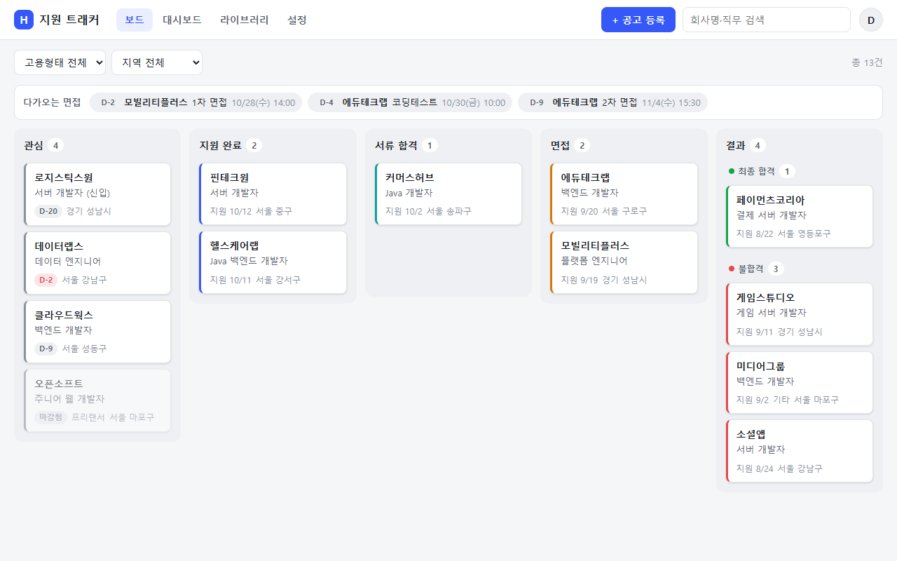
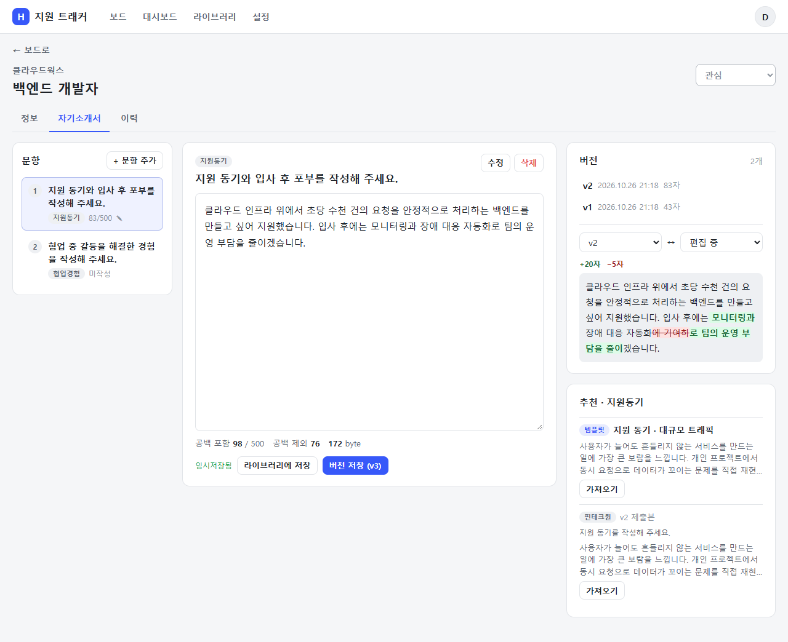
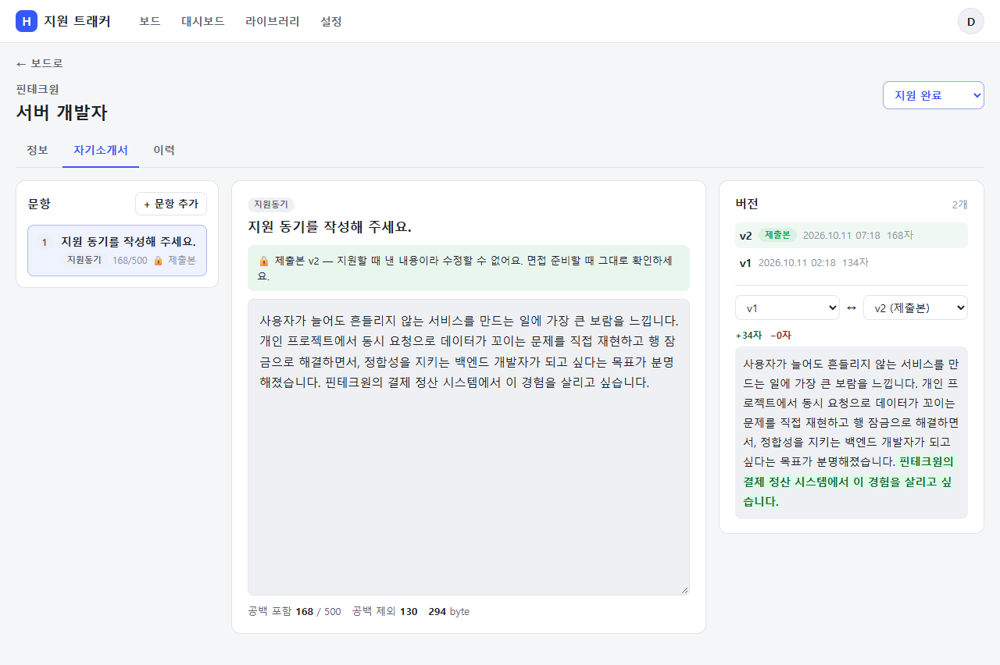
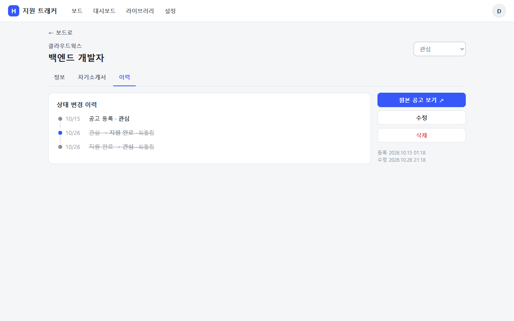
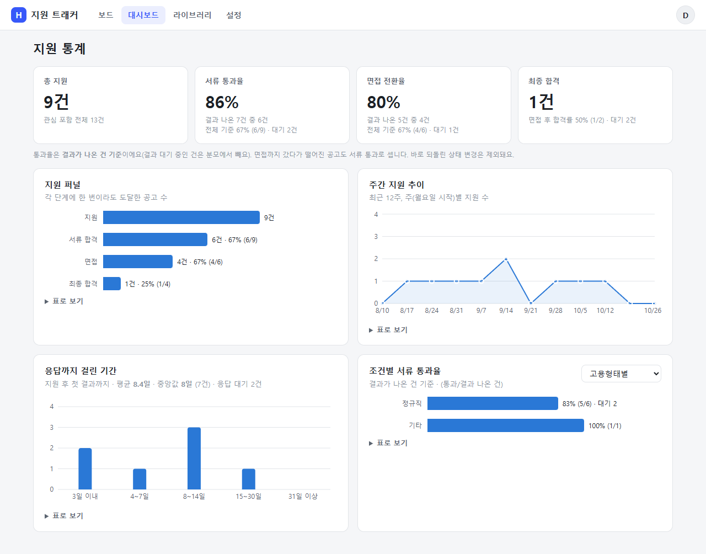
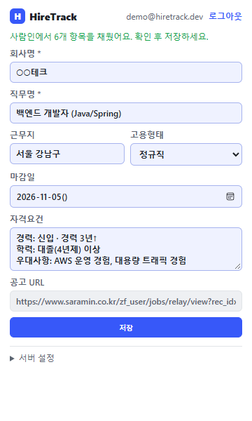
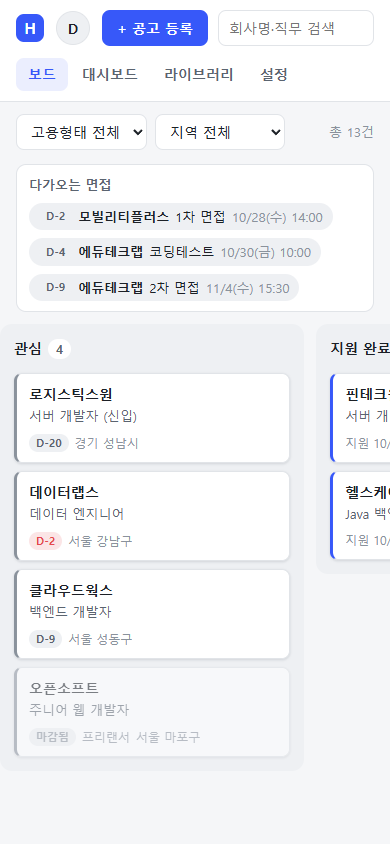
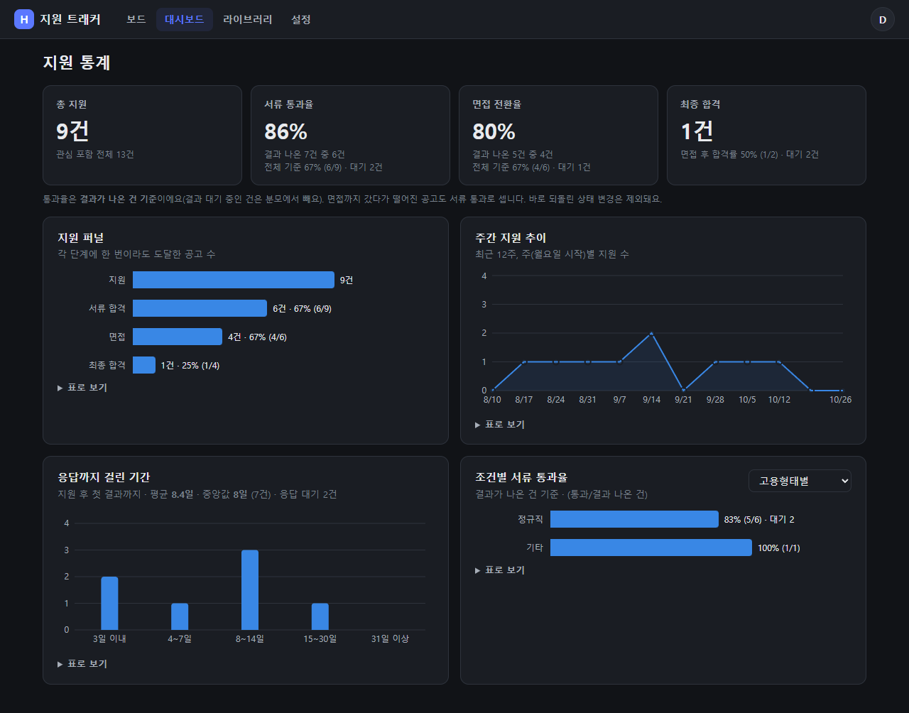

흩어진 채용 공고·지원 현황·자기소개서를 한곳에 모으고,
"나는 어느 단계에서 떨어지는지"를 숫자로 보여주는 지원 관리 트래커

취업 준비를 하면서 지원 현황을 스프레드시트·메모장·북마크에 나눠 적다 보니, 마감을 놓치고 어느 회사에 어떤 자소서를 냈는지 헷갈리는 일이 반복됐습니다. HireTrack은 공고 수집 → 지원 상태 관리 → 자기소개서 작성 → 결과 분석을 한 흐름으로 묶었습니다. 웹앱 · API 서버 · 크롬 확장 프로그램 · 캘린더 피드로 구성되고, 배포·백업·복구까지 실제 운영을 전제로 만들었습니다.
URL 자동 추출 또는 크롬 확장으로 보고 있는 페이지에서 바로
칸반 드래그로 상태 변경, 이력 기록, 마감 D-day · 면접 일정
버전 관리 · 비교, 지원 순간 제출본 고정, 답변 라이브러리
도달 단계 기준 퍼널, 주간 추이, 응답 기간, 조건별 통과율
데스크톱 · 모바일 반응형이고, 운영체제 설정에 따라 다크 모드로 바뀝니다.



통계는 "결과가 나온 건"만 분모에 넣고, 결과를 기다리는 건은 따로 보여줍니다.




보드 → 공고 등록 → 드래그로 상태 변경 → 자소서 버전 저장 · 비교 → 제출본 고정 → 면접 일정 → 통계 → 답변 검색 → 확장 프로그램 → 알림 · 캘린더 → 모바일
github.com/cjsrudgh98-crypto/HireTrack/blob/main/docs/demo/HireTrack-demo.mp4
서버 1대에 Docker Compose 로 Nginx · Spring Boot · PostgreSQL 을 띄웁니다. 웹앱은 같은 출처로, 확장 프로그램은 고정된 확장 ID 하나만 CORS 로 허용하고, 캘린더 앱은 URL 의 비밀 토큰으로 구독합니다.
/health/api 프록시 · /health 만 Actuator 로ddl-auto: validate · 로컬은 H2 PostgreSQL 모드| Backend | Java 25, Spring Boot 4.0 (Web, Data JPA, Security, Validation, Mail, Actuator), jjwt, Jsoup, Micrometer, springdoc-openapi, Sentry |
|---|---|
| Frontend | React 19, TypeScript, Vite 8, TanStack Query, React Router, dnd-kit, Recharts, diff-match-patch · 확장 프로그램은 Chrome MV3 순수 JS |
| Database | PostgreSQL 17 (운영 · 통합 테스트), H2 PostgreSQL 모드 (로컬), Flyway |
| Test | JUnit 5, Mockito, MockMvc, Testcontainers, JaCoCo, Vitest, Testing Library, Playwright |
| DevOps | Docker 멀티 스테이지, Docker Compose, Nginx, Let's Encrypt, GitHub Actions, GHCR, 백업·복구 스크립트 |
기능이 "돌아가는" 데서 멈추지 않고, 동시 요청 · 운영 DB · 보안처럼 실제로 쓰면 깨지는 지점을 테스트로 재현하고 막았습니다.
관심 → X로 기록됨. 통계가 이 이력으로 계산되므로 숫자가 틀어짐 (빠른 연속 드래그, 웹·확장 동시 사용)SELECT … FOR UPDATE 로 잠가 한 줄로 세움. 처음엔 H2 에서만 통과 — PostgreSQL 은 잠금 대기 뒤 잠근 행만 최신 값으로 다시 읽고 조인한 행은 옛 값을 쓰기 때문. 잠금 쿼리에서 join fetch 를 빼고 잠금 후 따로 읽도록 수정localhost · 사설망 · 클라우드 메타데이터(169.254.169.254) 같은 내부 주소를 찌를 수 있음0x7f000001, 2130706433 같은 표기도 차단baseVersion 검사 + (question_id, version) 유니크 제약의 두 겹. 자동 재시도 대신 409 를 돌려주고, 화면은 쓰던 내용을 지우지 않은 채 최신 버전과 비교해 보여줌<all_urls> 권한과 웹앱과 같은 토큰을 주면 유출 시 피해가 큼activeTab 만 써서 아이콘을 누른 탭만 읽고, 렌더링된 HTML 을 parse-html 로 보내 같은 파서 체인이 처리. 확장 전용 토큰(SCOPE_EXTENSION)은 추출·등록만 가능, CORS 는 고정된 확장 ID 하나만, 본문은 3MB 상한(posting_id, remind_day) 유니크 제약 + 발송 기록과 메일 발송을 한 트랜잭션으로 묶어 메일이 실패하면 기록도 롤백(다음 실행에 재시도). D-day 는 서울 날짜 기준, 사용자별로 하루 한 통에 모아 보냄hiretrack.reminders{result} 지표로 관찰bytea 로 추론해 varchar like bytea 오류(500). H2 테스트는 모두 통과해 배포 리허설에서야 발견cast(:x as String) 로 타입 명시. Testcontainers 로 모든 API 통합 테스트를 실제 PostgreSQL 에서도 돌리도록 서브클래스 추가, 스키마는 Flyway 로 관리하고 Hibernate 는 검증만.gitattributes. 헬스체크 실패 시 직전 이미지로 자동 롤백og:title · 메타 설명("경력:… 마감일:…")을 항목 이름으로 읽도록 수정, 실제 구조를 따른 픽스처(내용은 가짜)로 테스트 고정. 자동화 차단은 우회하지 않음PR 과 main push 마다 테스트·빌드가 자동으로 돌고, 배포는 같은 검사를 다시 통과한 이미지만 서버로 나갑니다.
단위 · 통합 · Testcontainers PostgreSQL · JaCoCo
ESLint · Vitest · tsc · Vite 빌드
가입 → 등록 → 드래그 → 통계, 제출본 고정, 가로 넘침
헬스체크 실패 시 직전 이미지로 롤백
| 백엔드 177개 | 도메인 규칙(상태 이력 · 되돌림 · 제출본 고정), 파서 체인 · SSRF, 자소서 동시 저장, 통계 집계, 알림 중복 방지, iCal 형식, 확장 토큰 범위 · CORS · 413, 로그인 잠금, 동시 요청 회귀 — API 통합 테스트는 H2 · PostgreSQL 양쪽에서 |
|---|---|
| 프론트 185개 | Vitest + Testing Library (라인 커버리지 85.6%, CI 하한): API 요청 정의와 백엔드 계약 검사(부르는 경로가 Spring 컨트롤러에 있는지 소스로 확인), 라우팅 · 로그인 가드, 자소서 편집기(자동 임시저장, 409 충돌 시 내용 유지, 제출본 읽기 전용, 템플릿 출처), 로그인 · 잠금 안내, 401 자동 로그아웃, 면접 등록 후 상태 이동, 보드 · 상세 · 통계 · 라이브러리 · 설정 화면, 낙관적 업데이트 롤백 |
| E2E 4개 | 실제 서버 + 브라우저: 핵심 흐름, 마우스 드래그, 제출본 고정, 데스크톱 · 모바일 가로 넘침 |
| 운영 | Actuator(별도 포트) · Micrometer 지표 · Sentry · 업타임 체크, pg_dump 백업과 복구 리허설 기록 (docs/OPERATIONS.md) |
github.com/cjsrudgh98-crypto/HireTrack
README 에 실행 방법(H2 로 바로 실행 / Docker), 화면, 시연 영상, 설계 문서가 있습니다.